Expand all Collapse all A counter-conversion engine deck by kupo7. The single biggest mistake a new pilot makes is assuming Yuna only triggers when creatures with +1/+1 counters die. Her ability triggers whenever ANY permanent you control is put into a graveyard with ANY counter on it—turning lore counters from completed Sagas, age counters from Cumulative Upkeep, charge counters, and modular counters into lethal +1/+1 counters on your team. Moreover, her ability triggers alongside The Ozolith, Resourceful Defense, and Modular, duplicating your counters rather than merely replacing them. Bracket 3: the Game Changer cap is three, filled by Cyclonic Rift, Rhystic Study, and The One Ring. No mass land denial. Assemble infinite loops from turn 6 onward. The engine 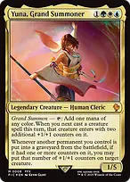Yuna, Grand Summonertaps for mana of any color and grants two additional +1/+1 counters to your next creature spell. Her second ability converts any counters from dying permanents into +1/+1 counters on target creature. The Ozolithcatches all counters from leaving creatures and stores them to distribute at combat. Yuna triggers simultaneously, effectively doubling every counter lost. 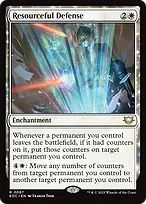Resourceful Defensepreserves counters when any permanent leaves, placing them on another permanent. Combines with Yuna to place twice as many total counters. 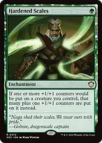Hardened Scalesadds an extra +1/+1 counter whenever counters are placed on your creatures, accelerating both Yuna's transfers and Grand Summon. 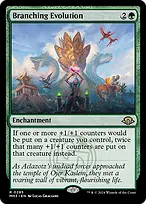Branching Evolutiondoubles all +1/+1 counters placed on your creatures, turning even modest counter transfers into game-ending explosions. 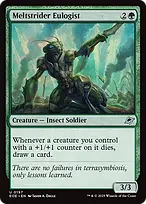Meltstrider Eulogistdraws a fresh card whenever any creature you control with a +1/+1 counter dies, ensuring your hand stays packed when exchanging pieces. 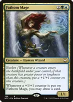Fathom Magedraws a card every single time a +1/+1 counter is put on it. Receiving Yuna's transferred counters can easily draw four to eight cards in a single trigger. 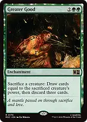Greater Goodsacrifices a buffed creature to draw cards equal to its power. Yuna immediately places all of that creature's counters onto another creature, letting you reload without losing board power. Skullclampequips onto 1-toughness creatures, Spawn tokens, or 0/0 counter creatures to draw two cards while triggering Yuna's counter transfer. Niche counter exploits 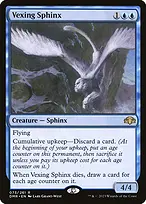Vexing Sphinxan evasive 4/4 flyer with Cumulative Upkeep. Discard dead cards to accumulate age counters, and when you let it die, draw cards equal to its age counters while Yuna converts those same age counters into +1/+1 counters on your commander. 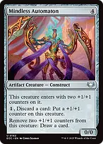Mindless Automatonenters with two +1/+1 counters and lets you remove two counters to draw a card. Acts as a bottomless draw valve for all the excess counters Yuna generates, and draws your entire deck with infinite mana. 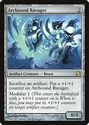Arcbound Ravagera free sacrifice outlet for artifacts with Modular 1. Sacrificing artifacts with counters triggers Yuna while growing the Ravager, and sacrificing Ravager itself transfers counters twice—once through Modular and once through Yuna. 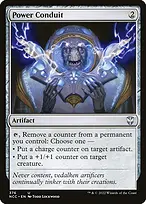Power Conduittaps to remove any counter from your permanents—stripping age counters from Mystic Remora to keep upkeep low, or removing -1/-1 persist counters—to put +1/+1 counters on creatures or charge counters on artifacts. 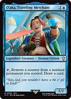O'aka, Traveling Merchanttaps to remove a counter from any nonland permanent to draw a card, converting spare counters across the board into raw card advantage. 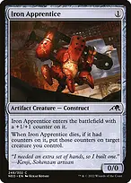Iron Apprenticeenters with a counter. When it dies, both its own trigger and Yuna's trigger place counters, doubling its payload onto your remaining creatures. 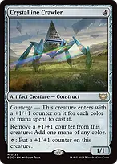Crystalline Crawlerenters with three counters from Converge, taps to add counters, and removes counters for mana of any color to filter and ramp into high-impact plays. 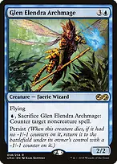Glen Elendra Archmagesacrifices itself for {U} to counter a noncreature spell, returning via Persist with a -1/-1 counter. Yuna or any entry trigger can place a +1/+1 counter on it to wipe away the -1/-1 counter, creating a repeatable counterspell shield. 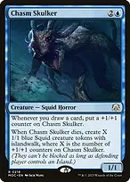Chasm Skulkergrows whenever you draw cards. When it dies, it creates an army of Islandwalk Squid tokens while Yuna moves all of its accumulated counters onto another attacker. 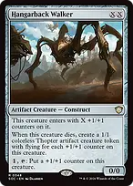Hangarback Walkerscales with counters and taps to grow. On death, it yields flying Thopters while Yuna redistributes all of its counters onto your team. Sagas and aeons 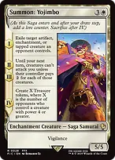Summon: Yojimboexiles an opposing artifact or creature upon arrival, deals four damage to each opposing creature on Chapter IV, and on sacrifice provides four lore counters that Yuna converts into four +1/+1 counters. 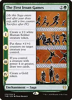The First Iroan Gamescreates a 1/1 token, places two counters, draws two cards with a Gold token, and sacrifices with three lore counters to give Yuna three +1/+1 counters to hand out. 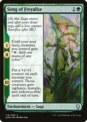Song of Freyaliseturns your creatures into mana dorks for two turns, then puts +1/+1 counters on them with vigilance, trample, and indestructible before sacrificing with three counters to feed Yuna. Urza's Sagaconstructs massive threats and tutors Sol Ring, The Ozolith, Skullclamp, Walking Ballista, or Iron Apprentice on Chapter III before dying with three lore counters to trigger Yuna. Compact combos +Heliod, Sun-Crowned + Walking Ballistapay {1}{W} with Heliod to grant Ballista lifelink; remove a counter from Ballista to ping an opponent for 1 damage, gain 1 life, and Heliod replaces the counter to loop for infinite damage 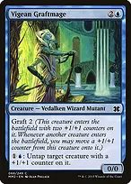+Vigean Graftmage + Incubation Druidwith a +1/+1 counter on Druid, tap it for three mana and pay {1}{U} to untap it with Graftmage, netting infinite mana of any color +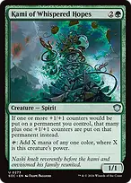Vigean Graftmage + Kami of Whispered Hopesonce Kami has power three or more, it taps for three mana and Graftmage untaps it for {1}{U} to generate infinite mana +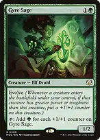Vigean Graftmage + Gyre Sageonce Gyre Sage has three or more counters, it taps for three green mana and Graftmage untaps it for {1}{U} to produce infinite green mana 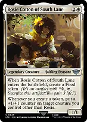+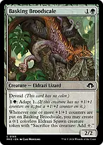Rosie Cotton of South Lane + Basking Broodscalecreating a token triggers Rosie to place a counter on Broodscale; Broodscale creates an Eldrazi Spawn token; loop for infinite 0/1 tokens, infinite colorless mana, and an infinite Broodscale Tutors and finishes →Eladamri's Call → Walking Ballistafetches the instant game-ender once infinite mana is online →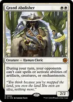Chord of Calling → Grand Abolisherconvoke at an opponent's end step to silence all interaction during your winning turn →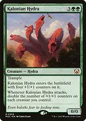Finale of Devastation → Kalonian Hydrafetches a massive pump engine or can be cast for X=10 to grant haste and +X/+X to the entire army →Green Sun's Zenith → Incubation Druidearly ramp or immediate combo assembly with Vigean Graftmage →Neoform → Glen Elendra Archmagesacrifices a 3-drop with counters to trigger Yuna and fetch the persist counterspell shield with an extra counter →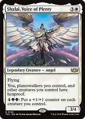Eldritch Evolution → Shalai, Voice of Plentysacrifices a 2-drop with counters to protect your board with hexproof and provide a repeatable mana sink Herald of Secret Streamsmakes every creature with a +1/+1 counter completely unblockable for an immediate lethal alpha strike 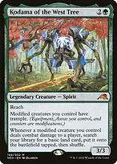Kodama of the West Treeprovides trample to all modified creatures and pulls every basic land from your library directly onto the battlefield Protection and disruption Grand Abolishercompletely shuts down enemy interaction on your turn, ensuring combos and combat execute without interruption 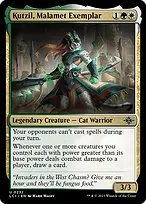Kutzil, Malamet Exemplarprevents opponents from casting spells during your turn while drawing cards when your modified creatures connect Shalai, Voice of Plentygrants hexproof to you and all other permanents, shutting off targeted removal Damning Verdictdestroys all creatures without counters, acting as a one-sided plague wind that leaves your buffed board intact Cyclonic Riftoverloads at instant speed to bounce all opposing nonland permanents and clear the way for lethal swings Flawless Maneuverzero-mana indestructible protection for your team while Yuna is on the battlefield Force of Negationfree counterspell to shut down opposing game-winning spells or sweepers on their turns Pact of Negationzero-mana insurance on your turn when pushing through a combo or alpha strike What to keep and sequencing A playable opening hand requires two or three lands producing two colors, at least one mana dork or rock (Birds of Paradise, Delighted Halfling, Sol Ring, Arcane Signet), and an early engine piece such as Mindless Automaton, Vexing Sphinx, or Pollywog Prodigy. Do not keep hands that rely on a single green mana source without fixing. In the early turns, deploy your ramp and cast Yuna on turn 3 or 4. Use her Grand Summon tap ability when casting midgame creatures like Fathom Mage, Chasm Skulker, or Incubation Druid to ensure they enter with immediate counters. When executing combos, wait until turn 6 or later as expected in Bracket 3. Establish Grand Abolisher or Kutzil before committing to a loop, and hold up Pact of Negation or Flawless Maneuver to answer opposing interaction. If an infinite loop is disrupted, pivot to Herald of Secret Streams or Kalonian Hydra to close out the game through unblockable combat damage.